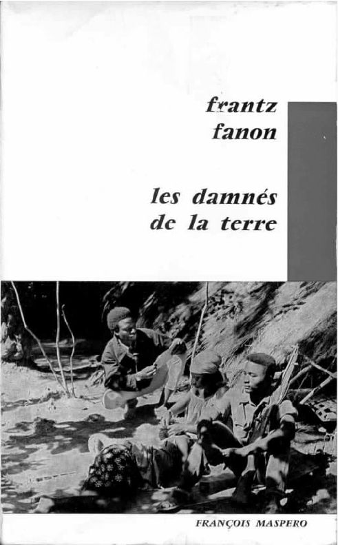

爱尔兰民族主义者罗杰·凯塞门爵士1916年
在接受叛国罪审判中的辩词
1965年3月，一架大不列颠的客机从阿尔及尔出发，途经布拉格市，中途在爱尔兰西部的香农机场停留的时候发生了故障，旅客们被迫在那里停留了几天。这些旅客是在去古巴的路上。一天晚上，他们抽光了雪茄，所以决定去香农市里看一场牛仔电影，但是没有看成。于是他们挤进了一家酒吧，要了一些啤酒。酒吧里挤满了人，在拥挤中一个当地的爱尔兰人撞在了一个古巴人身上，啤酒洒了他这位蓄须同伴一身。这个古巴人就是切·格瓦拉。
这个湿漉漉但却热烈的爱尔兰式欢迎引发了切一连串独具特色的俏皮话。切的曾祖父帕特里克·林奇在18世纪从爱尔兰西部的梅奥移民到了古巴。根据老一辈留下的历史悠久的传统，切只是高兴地又要了一杯啤酒。在酒吧以及在香农停留的大段时间里，切一直在与古巴著名的诗人及批评家罗伯托·菲尔南德斯·雷塔马交谈，那时候，罗伯托是古巴著名的美洲之家出版社的主任。切向他推荐说自己手头上有一本翻译的书可以在古巴出版发行，在切的这次非洲之旅中，这本书对他的影响与日俱增。这本书就是由弗朗兹·法农所著的《全世界受苦的人》。
非洲的革命已经渗透进了拉丁美洲的革命。这当然不仅因为非洲革命的代表法农来自拉丁美洲。你也许会说在20世纪有三个革命的非洲，而并非一个。它们分别是马格里布地区的革命，特别是阿尔及利亚的独立战争；然后就是撒哈拉沙漠以南地区的革命，它们受到法农精神的鼓舞，并在刚果战争中直接受到格瓦拉的援助；最后就是法农本人参与的非洲革命（非裔美洲人的更具有战斗性的革命传统在历史上总是不可避免地与加勒比海的介入相混合）。著名的切-鲁蒙巴俱乐部是20世纪60年代洛杉矶地区的一个军事化的、全部由黑人参加的共产党组织，这一组织的建立形象地表现了上面所提到的非洲——加勒比海的革命冲动（黑人社会主义运动的复兴也与此类似），这一组织自觉地成为黑豹党领袖斯托克利·卡米克尔、勒罗依·琼斯及休伊·P.牛顿领导的横跨三大洲的革命斗争的一部分。值得一提的是，这个全部由黑人参加的组织，它的名称的一半却是来自一个白人：切。但是作为一个西班牙裔的美洲人，在美国人看来，切毕竟不算是白人。
从这一时期切的著作与讲话中可以看出，他的视角已经有了明显的变化。他的着眼点已经从在古巴建立社会主义转移到了用法农的视角来重新审视这个被一分为二的世界。一方是具有剥削性质的帝国主义国家，另一方是进步的社会主义国家。在“巫师计划”（美国中央情报局实施的“颠覆行动”的一部分）之下，刚果刚解放不久，它的天才领袖帕特莱斯·鲁蒙巴在联合国的眼皮底下被暗杀。这一事件再加上美国发动的越南战争，传达出了一个新的信号：非洲国家以前所取得的一系列独立只是标志着从此进入了西方以另一种形式统治的新时期。极具号召力的著作《全世界受苦的人》鼓舞了新一轮的反帝运动。书中最难以理解的一个方面就是，法农论证了在反殖民斗争中应该使用暴力。他的观点基于这样的一种认识：暴力既不是文明也不是法律，而是殖民主义存在的一个必不可少的条件。他指出，殖民统治只是试图使殖民暴力合法化和正常化，而殖民暴力首先使得一个国家被占领，然后确保殖民统治能维持下去。
1961年《全世界受苦的人》出版，随后它迅速成为实现非殖民地化的像《圣经》一样的权威著作，鼓舞了全世界范围内不同形式的反殖民统治和反殖民压迫的斗争。当第一个英译本于1963年在巴黎由非洲再现出版社出版时，书名只是简单地被译成《受诅咒的人》。两年后，当它在伦敦出版时就改成了现在的名字《全世界受苦的人》。在此后的第二年这本书在美国发行，并且被加上了一个副标题《一个黑人心理分析家对当今世界种族主义和殖民主义问题的研究》。当1968年它以平装本大量出售的时候，这个副标题变成了《改变世界格局的黑人革命手册》。想一想吧，为什么是1968年而不是别的什么时间呢？想一想这本书的书名在五年时间里所发生的变化：从《受诅咒的人》到《改变世界格局的黑人革命手册》。
和那些为西班牙共和国而战的人一样，法农是一个国际战士。在许多方面，他的思想观念是世界大同，他总是站在被压迫和被歧视的人民一边，他考虑的问题是全世界的问题而不仅仅只是本国的问题。他表现出强烈的人道主义精神，和毛泽东一样，他非常强调农民参与革命的重要性，所有这些使其与另一位著名的国际主义革命家和富有献身精神的活动家切·格瓦拉齐名。两人走的都是非主流路线。切（1928——1967）与法农（1925——1961）几乎是同龄人，而且都是英年早逝。格瓦拉1963年7月首次访问了阿尔及尔，当时正值阿尔及利亚独立一周年。在这次为期三周的访问中，切与阿尔及利亚左翼政党民族解放阵线的领袖本·贝拉迅速建立起了融洽的关系。那时古巴与阿尔及利亚已经建立了密切的关系，而切与本·贝拉的思想意识形态非常相近。
1964年12月格瓦拉到了美国，令美国政府惊慌的是，他在联合国会议上发表了演说，深刻揭露和痛斥了帝国主义的罪恶。在这次访问期间，切被马尔科姆·X邀请去哈莱姆，在此之前卡斯特罗曾被邀请去过那里。但是，切考虑到美国政府已经被他在联合国的演说所激怒，再到哈莱姆发表演说会被看作是对美国内政的干涉，因而没有应邀前行，而是发去了一封表明团结立场的信。马尔科姆·X当众宣读了这封信，并做了如下的评述：
切信守要与非洲团结一致的承诺，在联合国之行后就到了非洲，在那里和中东地区出席了一系列累人的会议，并开展了一系列的外交活动。这些活动与四年前法农参加过的活动相似，不同点只是切跟随泛非主义者黑人W.E.B.杜波依斯的脚步访问了中国。就是这次非洲之旅使切真正体会到了《全世界受苦的人》当中所揭露的现实。1965年他返回阿尔及尔的时候接受了法农的遗孀乔西·法农为《非洲革命》杂志所进行的人物采访，采访中他强调了非洲反对帝国主义、殖民主义以及新殖民主义的重要性。他说尽管前途凶险，但是仍存有许多积极的因素，这些积极因素包括法农所说的“殖民主义在殖民地国家人民头脑中所留下的仇恨”。怀着对法农人道主义精神的敬意，格瓦拉在这次旅行期间写下了他最伟大的文章《古巴的社会主义与人》（1965），他在文中有力地论证了，以实现人的价值为基础的社会应该而且只能通过改变思想意识才能建立起来。在切看来，他所特指的新男性和新女性应该是一个新社会发展必不可少的一部分。他强调说，社会主义不是强加于人民的，而是应该按照人民自己的伦理标准和物质标准产生的。
这次非洲访问后不久，格瓦拉就领导古巴远征军进入了中非。随后他领导军队进入了玻利维亚，这次远征是他的最后一次，但结果是令人沮丧的。在某种意义上，格瓦拉继承了法农的光荣事业，成为了武装革命一面活的旗帜。然而他们在去世后愈加出名，成为生气勃勃的传奇人物和人们顶礼膜拜的偶像。切永远活在人们的心中。1966年再版的《全世界受苦的人》把格瓦拉和法农象征性地联系在了一起。在这版书的封面上第一次印上了照片，但并非是我们所预料的那些照片。照片上不是阿尔及利亚而是一群非洲革命者，有男性也有女性，他们正在丛林中进行一场游击战。这本书以这张照片来纪念切·格瓦拉与他的非洲和古巴联合军队那时在刚果进行的革命斗争。

图19 法农的《全世界受苦的人》1966年的再版封面。
和切一样，法农最伟大的品质之一就是他鼓舞他人的能力。他的出版商弗朗斯瓦·马斯伯乐曾有力地描述过法农的这种和切同等的行为天赋，正是这种天赋使得他们极受同时代人的推崇。马斯伯乐这样描叙道：
法农的第一个出版商和编辑弗朗西斯·杰森对此书也有相似的反应。他是《阿尔及利亚，法律之外》（1955）一书的作者，这本书相当有名，他在《黑皮肤，白面具》（1952）的初版序言中写道：
在这遥远的人道主义的名义下，无论是切的文章还是法农在民族解放阵线的内部报纸《圣战者报》上发表的文章，都明显地提出了对国际主义的强烈关注。这也正是法农通过《全世界受苦的人》中的普救说试图去实现的。我认为，切自己也认识到了这一点，这个可以在他与乔西·法农的谈话中看出来。在谈话中切提到，他计划通过联合亚非拉地区广大殖民地、半殖民地国家去建立“一个洲际的反对帝国主义及其内部同盟的统一战线”。每当提及他的环非之旅，切都会强调古巴的解放斗争与非洲的解放斗争的一致性，指出不仅要在非洲而且要在全世界范围内联合一切反帝反殖民运动和社会主义国家，建立统一阵线。切和法农的知识背景出奇地相似，都融会了萨特哲学、心理分析、马克思主义及毛泽东思想的内容。格瓦拉极具社交能力，法农却是一个艰难的孤独者。两个伟人不仅有着深邃的思想，同时也有着充沛的体力。法农对暴力的反复强调，似乎是在发泄自己无法遏制的激情、热情、力量、憎恨、愤怒和不耐烦，以及他语言和态度中的攻击性（这种攻击性构成了他独特的个性）。以上的内容再加上“桀骜不驯”这个词和他对激进的喀麦隆领导人费利克斯·穆梅吉（人称喀麦隆的胡志明）的描述，就构成了一个完整的法农。他是这样描述费利克斯的：
最后他们还有一个相似点，即无论是法农还是格瓦拉都不是职业的革命家，甚至他们都算不上是职业的政治家。但他们却是专业的，他们因为坚信自己同胞的悲惨处境是整个社会的产物，而不仅仅是一种自然的或者个人的不幸，而义无反顾地进行着革命斗争。由他们倡导的、跨越三大洲的、人道的社会主义源于他们自己的生活经历以及对被压迫者的怜悯和同情。
我们需要记住，事实上法农和格瓦拉都是训练有素的医生，无论何时他们都会运用自己的医术治病救人。与此同时，他们每时每刻都在担负起暴力革命的责任。通过暴力革命来拯救苍生的哲学悖论，在他们的生平和作品中留有深刻的印记。他们将这一点与医务工作进行了类比：要治愈殖民统治这一硬伤，就应运用外科手术而不是早期甘地所倡导的整体疗法。马提尼克的诗人和政治家艾梅·赛萨尔在法农逝世后给他写了篇赞语，其中很好地诠释了这一极具挑战性的政治哲学。
法农的反抗是道德上的，他的努力是慷慨的。同格瓦拉一样，他的反抗也具有不屈不饶的决心：“不选择社会主义，就是选择死亡。”
后殖民世界是一个混杂的世界。自1968年麦克卢汉创造出地球村这个概念以来，世界各地的文化逐渐碰撞、融合，而且并存着。全球化主要是科技和传媒系统的产物，传媒系统可以在瞬间把发生的任何事情传播到世界各地（只是在现实中，允许我们看见的东西都是被精心控制的）。尤其是20世纪90年代早期苏联和所谓的东方集团解体后，全球化趋势势不可挡，世界经济逐渐一体化。当多国和跨国公司在西方成熟市场寻求经济快速增长已经不再可能时，它们转向了世界市场，不约而同地在贫穷和政治稳定的国家（专制的国家最好）采用外包、设立呼叫中心的方法来降低成本。今天，在世界经济一体化和国际劳动分工的大环境下，几乎所有的社会都受到了它们以这样或那样的方式所施加的影响。
在一定程度上，这意味着世界的某些方面——尤其是日用品的生产被标准化了，结果无论人们在哪里买到的都是一样的牙膏和剃须刀。这种情况也许不会再继续了。麦当劳——这个名子已有了全球化的含义——如今已成为反资本主义者的斗争对象的象征。据称麦当劳两年来利润不断降低，尽管它每天向一百二十一个国家四千六百万人提供汉堡包，最近仍然遭受了损失。这可能是因为世界各国人民已经开始意识到，总的来说还是本土食品更加可口，也许还更加健康。毕竟在这个疯牛病流行和给动物注射生长激素的年代，含大量脂肪的牛肉一般不是人们的健康选择。为什么美国人越长越高？想想这个问题吧。南美洲的情况就很不一样，那儿的人给牛注射雌性激素以使它的肉更加柔软。
麦当劳现已发表了它的《社会责任报告》，承认“麦当劳或许在世界上许多地方代表不同的意义”，过去麦当劳自称是“实践社会责任的典范”，现在这一举动威胁到了它的形象。抵制麦当劳扩张的运动可能是美国商业全球化历史的分水岭。当世界人民把美国本身与美国梦中的富有与自由联系在一起时，美国商品品牌的全球化运行良好。在向往边境以北幸福生活的墨西哥人当中，人均喝的可口可乐比世界上其他任何一个民族喝的都多，此事绝非巧合。如果你被边境警察遣送回来，还可以坐下来喝杯可乐安慰自己。另一方面，美国为了实现自己的利益，在伊斯兰国家广泛推行武力压迫的帝国主义政策，在那里情况却大不相同。在以辛辣食物为主而且禁酒的炎热国家，可乐是一种理想的饮料。然而口渴的穆斯林选择喝“梅卡可乐”，一种为穆斯林生产的饮料，“梅卡可乐”的利润被捐给了巴勒斯坦的慈善机构。
多国或跨国公司产生了两种影响。对这种公司施加压力使其停止污染或破坏环境，比对本土自行其是的公司施加压力更容易，这一点近年来已很清楚。与跨国公司相比本土公司可能对这种抱怨不予理睬，例如亚马逊地区的伐木公司和采矿公司。相反，像壳牌或耐克这样的公司在当地的行为最终还是容易受到国际压力的影响。壳牌公司纵容它的尼日利亚子公司在几年当中进行了一系列压迫欧格尼人民和破坏当地环境的活动，这种做法已经臭名昭著。在遭到连续的抗议后（由尼日利亚小说家肯·萨罗——维瓦领导，直到他服死刑），壳牌最终大大改变了做法。在尼日尔三角洲工作的其他许多石油公司就没有做到这一点。
“好食品——雀巢——好生活”
一些跨国公司在社会舆论界的名声继续恶化。例如，雀巢公司（自称“世界领先的食品公司”）2002年12月对外宣布决定向埃塞俄比亚政府索取六百万美元的赔偿，原因是1975年埃塞俄比亚前政府将其企业收为国有。但是，雀巢直到1986年购买德国母公司时才获得对那家企业的权益。埃塞俄比亚是全球最穷的国家，它那时遭遇了二十年来最严重的饥荒，六百万人靠紧急粮食救济生活。埃塞俄比亚政府拿出了一百五十万美元的救济款，然而，雀巢公司要求按照1975年的外汇汇率得到全额赔偿。国际咖啡价格的猛跌使饥荒所造成的后果更加严重，因为咖啡是埃塞俄比亚四分之一人口的支柱产业。埃塞俄比亚是世界人均收入最少的国家，人均大约每年一百美元，超过十分之一的儿童未满一周岁就会死亡。作为全球最大的咖啡制造商，雀巢公司2001年的年利润达到了五十五亿美元。现在许多埃塞俄比亚农民不得不以低于成本的价格出售他们的农产品。埃塞俄比亚人均年收入仅够每星期从“全球领先的食品公司”买五十克雀巢咖啡。
雀巢公司的行为在报纸头版、电台和电视上被报道出来，大批表示抗议的电子邮件像雪片一样从世界各地发来，要求雀巢尽快改变态度。12月19日雀巢代言人声称该公司是不得已“按照原则”将埃塞俄比亚政府告上法庭索取六百万美元赔款。次日，雀巢公司决定把得到的全部索赔款重新在埃塞俄比亚进行投资。为此《金融时报》毫不隐讳地报道说：
请注意，雀巢接受了全球抗议，承认它的所作所为有些不合情理，并意识到社会形象不佳会带来几十亿的损失。还有很多事情是我们不知道的。把这些我们不知道的事情撇开，你自然想知道，这家公司还会做出什么别的事情来。
长期以来，雀巢公司一直是国际婴儿食品行动联盟的攻击目标，该联盟称雀巢和其他公司在发展中国家违反了国际母乳代用品的销售守则。根据国际婴儿食品行动联盟的统计，在第三世界国家每三十秒就有一名儿童死于不安全的奶瓶喂养。尤其像雀巢这样的巧克力和咖啡制造商，已成为追求公平贸易标准的活动家、慈善机构和环保组织的攻击对象。种植咖啡、茶叶和巧克力等作物的当地农民则得到了保障：他们的产品会以合理的价格卖出，这样他们就能够糊口。一个成功的策略就是国际公平贸易组织的发展，该组织为当地生产者提供销路，并为消费者提供选购带有公平贸易标签的产品的机会。公平贸易产品主要是农产品，如咖啡、茶叶、糖、大米和水果，但今天该体系正向工业产品扩展。
为什么实行公平贸易？
公平贸易基金会网站，www.fairtrade.org.uk
除商界和经济界以外，很少有人认为全球化是一种特别积极的现象。能促成全球化的机构经常受到谴责，尤其是世界银行、国际货币基金组织和世界贸易组织。人们之所以反对世界银行，是因为它制定的严厉条款只符合它自己所希望的经济需求规则，而不符合参与国家的规则。世界银行与政府合作，而不与人民合作，这一做法使这种情况更加严重。它似乎从不接受教训。由于受影响的当地人民从未被考虑在内，所以世界银行的大型项目一次又一次地遭到谴责。例如，为替换20世纪80年代灾难性的勃洛诺若艾斯特项目，世界银行在巴西建立了勃朗纳法若项目，该项目是作为一个可持续发展项目而设计的，在规划时就没有让受到影响的当地民众参与进来，后来只是在西方环保组织的压力下才咨询了当地民众。世界贸易组织就其本身而言，似乎只是一个帮助西方公司或跨国公司以最优条件进入其他市场的团体，而这种优惠却不是相互的。面对向非西方世界的低价倾销，世贸组织却无所作为。
贫穷与饥荒
从另一方面讲，只是一味地责备世界银行和世界贸易组织，无济于事。非西方世界的贫困现象，至少是人民的苦难，一部分也是由当地政府直接造成的。饥荒便是一个例子。在津巴布韦人们争议的话题是，为什么穆加贝总统在土地重新分配方面拖延了这么长的时间，为什么他只是在这个国家发展停滞之后才开始这项工作。这项工作拖延如此之久以致非洲南部爆发了一场饥荒，这是不可原谅的。即使这是殖民主义的遗患所致，土地重新分配方面的管理失职也是一个重要原因。
最近一段时间，历史学家和经济学家一直在研究饥荒史以及历史上饥荒在何种程度上是人为造成的，或是因政府和殖民统治者的错误而加剧的。阿玛蒂亚·森曾对印度和其他地区的饥荒做过著名的研究。森认为饥荒更多的是由权力关系而非粮食匮乏所造成的。1943年孟加拉国饥荒饿死了三百万人，而当时孟加拉国的大米产量是历史上最高的。类似的还有现在才知道的以下事实：19世纪40年代爱尔兰大饥荒时，爱尔兰实际上在向国外出口粮食。现代饥荒中的一大部分是人为造成的。饥荒的历史习惯于重演。
在印度，当代的饥荒是在不同条件下发生的。据此，许多人设想：今天，印度人饿死不是因为没有粮食，而是因为他们无权食用这些粮食。与非洲撒哈拉沙漠以南地区相比，印度有更多的人长年营养不良，一半多的印度儿童体重不达标。而当这种情况发生时，印度生产的粮食实际上完全能满足全国的需要，并且印度政府的小麦和大米的储存量占世界粮食储存总量的四分之一。不过，很大一部分原因是由于腐败和效率低下的官僚作风。掌管粮食储备的印度公共财物分配系统似乎完全无力帮助那些快要饿死的人，如拉贾斯坦邦和奥里萨邦的人。因为粮食的储存费用就要占到年度粮食预算的一半，印度亏本在国际市场上出售大米。尽管自己的人民在挨饿，印度出口的大米却占世界大米出口总量的三分之一。印度有一半多的人口食不果腹，可为什么政府还要花费几百万美元搞航天项目？
如此看来，饥荒和贫困并不总是资源匮乏的标志，而是由分配不均造成的。或者像印度一样，宁可让国库里的粮食烂掉，也不愿开仓赈灾。如果说所需要的只是几辆军用卡车，那就把问题过于简单化了。像森指出的那样，从长远来看，分配不仅是运输问题，更是购买力和贸易的问题。然而，在紧急状态下，人们很容易相信交通和完善的基础设施能够缓解粮食分配问题。
在不公平的世界里分享资源
世界是富有的，世界又是贫穷的。现在世界上有两千万难民和流离失所的人。其他人在贫穷与富裕之间生活着，其间差距很大。国家政权建立了一个巨大的不平等的机构（享用资源和商品方面的不平等）。据估算，如果全世界的国家都像美国一样消耗资源，人类至少还需要两个地球。
你可以分析国家内部不同阶层之间的收入差距，也可以分析国家之间的收入差距。各国的国民总收入（年均收入）列表很长，呈现出不同的等级。排在最高位的是卢森堡，人均年收入四万四千三百四十美元。排在最低位的是埃塞俄比亚，人均年收入一百美元。简单地将所有国家划分为两种类型：富裕国家（高收入国家）和贫穷国家（发展中国家），前者总人口九亿，人均年收入二万六千美元，后者总人口五十一亿，人均年收入三千五百美元。这五十一亿人口中有一半居住在最贫穷的国家，人均年收入仅一千九百美元。
这些差距激起了全球对我们的经济环境的不满。然而，即使是反对资本主义的全球运动也不那么简单。资本主义的两面性超出任何人的想象。据最新发现，许多反资本主义的组织，比如试图关闭世界银行和世界贸易组织的全球交流组织，再比如组织游行使得1999年世界贸易组织西雅图会议以失败而告终的鲁克斯社团都受到了联合利华的资助，它们是通过本吉里牌冰激凌、欧共体和英国国家彩票委员会而获得资助的。为什么资本主义要资助企图毁灭它的反资本主义运动呢？为什么美国要资助奥萨马·本·拉登的“基地”组织？它后来对纽约造成了严重的破坏，美国亲手创造出了一个现在与之交战的幽灵。这些都是激进的后殖民政治不得不面对的难题。现在的危险是，似乎有一种新的自我解构的政治在起作用，其目的是通过树立自身的对立面来维护世界新秩序。很显然，资本主义甚至设法制造出抵抗自己的对象，组织并增加了自我抵制的形式。
也许这意味着资本主义一直都是一分为二的，还有以我们的未来为由进行战略干预的空间。